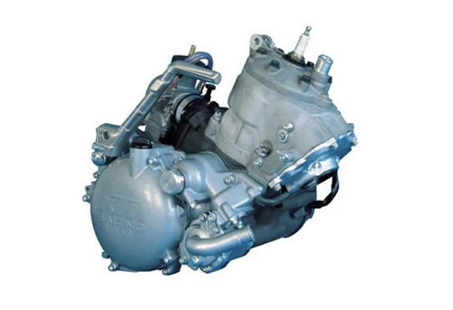
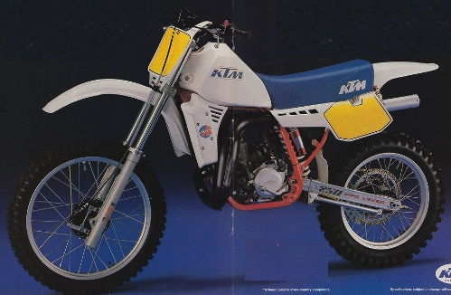

| KTM motor service manual repair 125 / 200 1999-2006 2-STROKES | |
 |
Instant download of the factory repair manual for 1999-2006 KTM 125 and 200 two-stroke dirt bike motors. Does not cover bike chassis, motor and carburetor only! 189 pages. |
 |
| KTM dirt bike 1984 models service manual repair | |
 |
Instant download of the factory repair and spare parts manuals for 1984 KTM dirt bikes. Click the Buy Now button to see specific manuals included. 648 pages. |
|